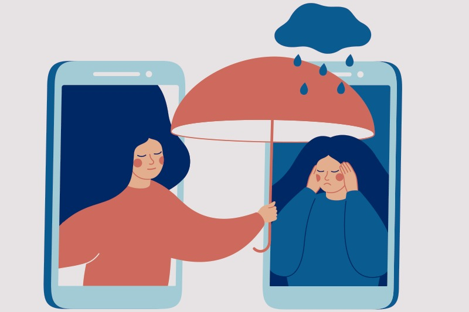

Um em cada dez brasileiros com mais de 18 anos já recebeu diagnóstico de depressão, segundo o Plano Nacional de Saúde divulgado em 2020

Um em cada dez brasileiros com mais de 18 anos já recebeu diagnóstico de depressão, segundo o Plano Nacional de Saúde divulgado em 2020. É muito provável que você conheça alguém ou mesmo já tenha passado por um quadro desse. A psiquiatra Alexandrina Meleiro, vice-presidente da Abeps e integrante da ABP e da Abrata, alerta para a necessidade de buscar apoio e, se necessário, tratamento, antes que fique crônico.
“A depressão não surge de um dia para o outro. Ela vem sorrateiramente e vai minando as forças, a energia… vai causando alguma perturbação no sono, alteração no apetite, na disposição física, mudando a cognição e isso vai se acentuando de modo que eu vou começando a ter pensamentos muito pessimistas. A minha autoestima vai lá para baixo, eu fico desesperançada, sem perspectiva de vida, sem ver saída”.
As flutuações no humor são naturais, lembra ela. Há dias em que se está bem, e em outros não. Já a depressão, explica, atinge todas as áreas da vida da pessoa: pessoal, a afetiva, o trabalho, a escola, os esportes, a vida social…
Com o avanço da doença, a pessoa deixa de desenvolver coisas que antes eram corriqueiras e, com isso, começam a chegar pensamentos mais pessimistas, a estima cai, e costuma ocorrer a falta de perspectiva de vida. Em geral, já não se consegue vislumbrar o futuro. “Os pensamentos ficam remoendo na nossa cabeça. O termo é ruminação porque eles ficam sendo triturados. E aí se nós não tomarmos conta, isso pode evoluir para pensamentos de morte, pensamentos de não querer estar vivo, de ideação suicida”.
Nesse sentido, identificar a depressão é fundamental. “Há uma série de performances diferentes que às vezes se somatizam e nós temos que verificar. Pode ser, por exemplo, uma alteração orgânica da glândula tireoide, excesso de determinadas substâncias, como a dependência ao álcool e outras drogas, uma doença cardíaca ou neurológica, então é preciso buscar um especialista”, destaca. Os cuidados são fundamentais para reduzir o sofrimento.
Mas Alexandrina Meleiro alerta que o estresse cotidiano por uma situação pontual não faz parte desse quadro e tristeza não é depressão. Diante de uma perda, é natural esse sentimento. “A pessoa pode estar triste porque perdeu uma pessoa querida, o emprego ou outra coisa qualquer”.
Todo mundo fica triste. “Isso não quer dizer que eu estou deprimida ou tenho um quadro que precisa de uma intervenção. Em geral, esse é um quadro passageiro. Dependendo do motivo, pode levar algumas horas, dias, um mês, dois… mas isso vai se resolvendo sozinho, não precisando de grandes intervenções. Em geral, se a pessoa tem suporte social, familiar, se ela tem uma boa estrutura, consegue enfrentar”.
O tabu, por outro lado, amplia o isolamento. É muito comum o silêncio por medo de julgamento, assim como a culpa e a sensação de ser um fardo para os outros. Depressão não é preguiça, mau humor, estresse, desânimo, cansaço, tristeza, força ou fraqueza.